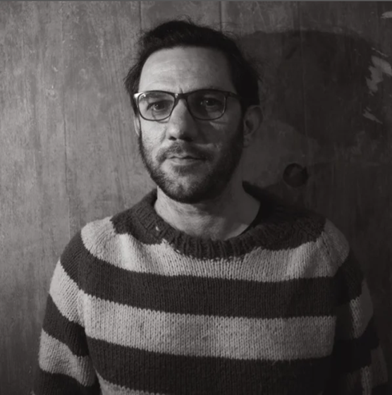

Jerónimo Naranjo
(Tandil, 1979) Músico, compositor y productor musical. Toca varios instrumentos: piano, guitarra, bajo, armónica y charango. Tiene experiencia programando en MIDI y en el manejo de samplers y sintetizadores.
Licenciado en Composición Musical con Medios Electroacústicos (Universidad Nacional de Quilmes), trabaja desde 2007 en Pomeranec Música & Sonido, empresa dedicada a la producción de música original para cine, publicidad y todo tipo de medios audiovisuales.
Hasta la fecha ha participado en la realización musical de más de 45 largometrajes, cortometrajes, series y publicidades. Entre sus trabajos destacados figuran Aballay, el hombre sin miedo (2011, Fernando Spiner), La chica más rara del mundo (2019, Mariano Cattaneo) y La casa (2013, Diego Lerman).
Es docente de la materia Diseño de Sonido y Musicalización en la Universidad del Cine.